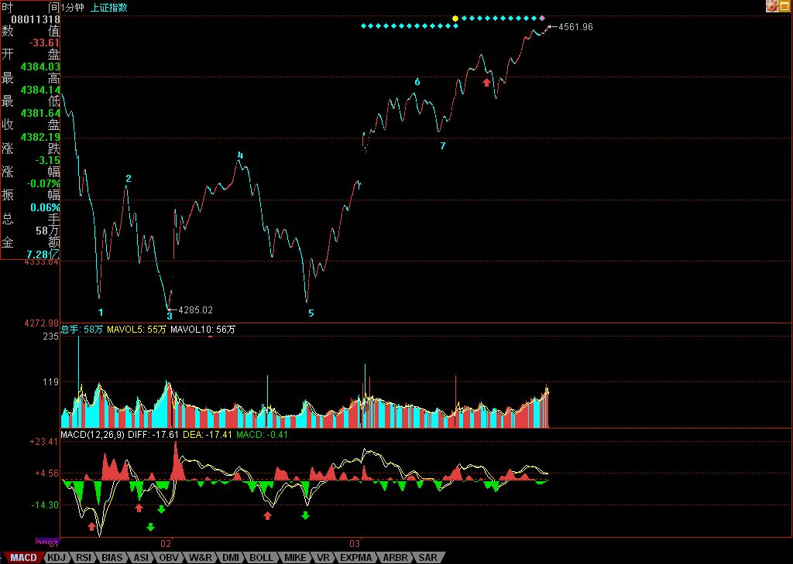

坐轿子的感觉确实不错，坐在轿子上看沿路风景，别有一番情趣。下面，是关于坐轿子上华山的第一天日记。这个日记，将有N日N章。
今天大盘的跳空高开，就使得6月20前后的K线组合不可能出现。昨天已经说过“市场往往不会按照理智的方式进行，市场往往就是醉生梦死疯一回”，站在第三拨人的立场上，尽快远离4300点，吸引第四拨人进来，本来就是急切的事，至于后面将引发什么，他们当然无所谓，而前两拨人就更无所谓。一般来说，越到后面的第N拨，其成分将越来越杂乱，如果说第一拨人的成分是最纯净的，到后来，就三教九流，什么都有了。
今天的大盘开始迎来第四拨人里的先头部队，周末如果没有什么太大的坏消息，那么，第四拨人里的主力部队将在下周大面积进入。这拨人的成分将比第三拨更杂，有前三拨中中途开小差的逃兵，有看所谓周线突破有效进入的技术人士，有在外面卖外卖现再回家开店的、更大面积的是那些被钱烧得发慌的各路男女等等，醉生梦死疯一回游戏正式开始。
对于前三拨进来的人，从现在开始，最后埋单的是谁，是N等于几，已经不重要，关键是如何把这个游戏玩得长一点，但这个时间并没有什么上帝去规定，一个合力的结果下，从下周一开始，这个游戏的时间T开始计算，T从0开始，向着尽可能大的数进发。这就如同玩电子游戏，去预测在第几关结束是脑子有水的表现。
也正如玩游戏，关键是操作的策略，而不是去预测游戏在第几关结束。目前的操作也一样，预测都是无聊把戏，关键是有精密的操作。而操作是针对不同人的，如同玩游戏，高手和低手当然不是同一玩法：
对于低手，本ID反复说过最基本的操作策略，就是短线看5日线，中线看5周线，长线看5月线，只要不有效跌破，相应的操作就不用操作了，持股看着就可以。何谓有效跌破，就是跌破后反抽上不来，这种反抽当然和对应级别有关，例如一个月线的跌破，至少要看下个月反抽的情况，而不是看一日。
对于大资金以及散户里的中高手，就是要利用震荡机会就减低成本，一路上涨，一路把成本减下来但持仓数量不变，这样，你的仓位就自然随着大盘的上涨下降，也就是钱越来越多，但筹码没少，这样，是既回避大盘可能的突发非系统风险，又能完全把握市场利润的有效方法。
对于散户里的高手，就要充分利用大盘震荡中板块的轮动机会，获取市场最大的机会。
有人可能问，做不到高手怎么办？那就做低手，持股都不会，大盘晃悠一下就鸡飞狗跳的，那还炒什么股票，让股票炒你就行了。
昨天已经说了“个股方面，成分股继续打冲锋，一旦确认周线突破成立，二、三线股会跟上的。”这个结论继续有效，而且，只要第四拨资金能被忽悠进来，那些已经消除业绩风险的二、三线股，以及有题材的股票将大肆表现，例如，你没看到这两天，本ID已经大肆引诱各位到北京旅游了吗？注意，题材股的操作，一定不要追高，过了这个村，还有那个店，天天都有新机会，不管谁的股票，都不必追高。
股票都是废纸，一个好的策略与心态，能让你把废纸变黄金。
技术上，把今天的分段放上来，还搞不清楚的，请好好学习。例如下图中的7，这是什么？是下面那1分钟中枢的什么？这么标准的图形，都看不明白，那请把ID的课程重新读去。
周末，腐败的时间到了，大家放风去吧，别让股票把自己的生活套牢了，本ID要去风花雪月去也，不陪各位了，自由活动，周日继续音乐会，这次一定不爽约。
先下，再见。
